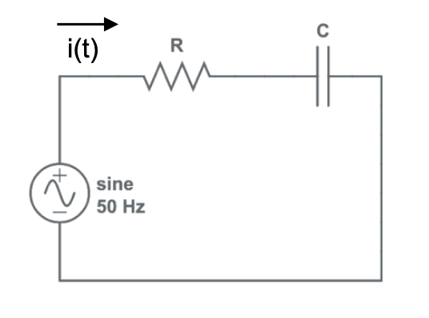
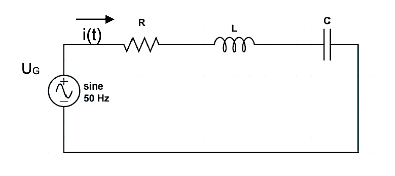
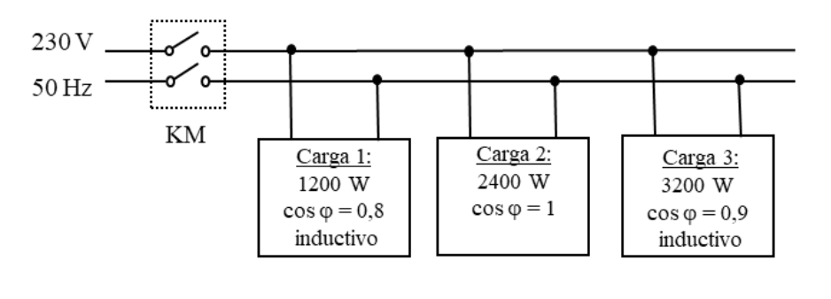

Recopilación de los problemas del Bloque D1 incluidos en la propuesta de la Ponencia de Selectividad para el curso 2025-26.
Problema 1
La resistencia de un calefactor está sometida a una tensión de \(125\) V (eficaces) cuando consume \(1000\) W de potencia. Para su funcionamiento se conecta a una tensión de red de \(220\) V (eficaces) y \(50\) Hz. Considerando que el sistema se corresponde con el circuito de la figura (Serie R-C):

- Obtener la corriente que atraviesa los elementos del circuito.
- Determinar los valores de la capacidad \(C\) y de la reactancia capacitiva \(X_{C}\).
- Calcular la potencia activa, reactiva y aparente y dibujar el triángulo de potencia. Determinar el valor del factor de potencia.
Solución: a) \(I = 8\) A.
b) \(X_C = 22,63\) \(\Omega\); \(C = 140,66\) \(\mu\)F.
c) \(P = 1000\) W; \(Q = -1448,32\) VAR (Capacitiva); \(S = 1760,01\) VA; \(\cos\varphi = 0,57\).
Problema 2
Un circuito de corriente alterna conectado a un generador con una tensión entre sus bornes de valor eficaz de \(220\) V y \(50\) Hz, tiene en serie una resistencia de \(50\) \(\Omega\), una bobina de \(50\) mH y un condensador de \(100\) \(\mu\)F.
- Dibujar el circuito y determinar la expresión \(v(t)\) del generador.
- Determinar el valor de la impedancia del circuito. Razonar si se trata de una impedancia inductiva o capacitiva. Dibujar el triángulo de impedancias.
- Calcular la caída de tensión e intensidad en cada uno de los componentes pasivos.
- Calcular la potencia activa, reactiva y aparente. (Nota: Tómese para todo el problema como origen de fases la tensión del generador).
Solución: a) \(v(t) = 311,13 \cdot \text{sen}(100\pi t)\) V (suponiendo fase 0).
b) \(\vec{Z} = 50 - j16,12 \Omega =52,53 {\enclose{phasorangle}{-17,87º}} \Omega\). Es capacitiva (\(X_C > X_L\)).
c) \(\vec{U_R} = 209,5 {\enclose{phasorangle}{17,87^{\circ}}}\) V; \(\vec{U_L} = 65,82 {\enclose{phasorangle}{107,87^{\circ}}}\) V; \(\vec{U_C} = 133,37 {\enclose{phasorangle}{-72,13^{\circ}}}\) V.
d) \(P = 877,81\) W; \(Q = -283\) var (Capacitiva); \(S = 922,30\) VA.
Problema 3
En el circuito mostrado en la figura, donde \(U_{G}=100\) V (\(50\) Hz), \(R=200\) \(\Omega\), \(L=50\) mH y \(C=15\) \(\mu\)F.

- Determinar la intensidad proporcionada por la fuente en el circuito mostrado en la figura.
- Dibujar el diagrama fasorial de tensión.
Solución: a) \(\vec{I} = 0,36{\enclose{phasorangle}{44,49^{\circ}}}\) A.
Problema 4
Se conecta una impedancia, \(Z=(40+j~31,41)\) \(\Omega\) a un generador de corriente alterna de \(220\) V de tensión eficaz y \(50\) Hz de frecuencia. Calcular:
- La potencia activa, la potencia reactiva y la potencia aparente y dibuje el triángulo de potencias.
- La capacidad del condensador (\(\mu\)F) a conectar en paralelo con la impedancia para conseguir un factor de potencia de \(0,98\).
Solución: a) \(P = 749,22\) W; \(Q = 588,31\) var (inductivo); \(S = 952,6\) VA.
b) \(C = 28,68\) \(\mu\)F.
Problema 5
Por una asociación serie de resistencia (R) e inductancia (L) en un circuito eléctrico circula una intensidad de \(i(t)=12 \cos(1200t+60^{\circ})\) mA, siendo el voltaje en los extremos del conjunto de \(v(t)=0,8 \cos(1200t+85^{\circ})\) V. ¿Cuál es el valor de la resistencia R y de la inductancia L?
Solución: \(R = 60,42 \Omega\).
\(L = 23,47\) mH.
Problema 6
Un circuito doméstico de \(230\) V eficaces a \(50\) Hz alimenta dos lámparas de \(75\) W con un factor de potencia unidad y un motor que consume \(500\) VA con un factor de potencia \(0,78\) inductivo.
- Dibujar el circuito, representando cada carga mediante una impedancia e incluyendo el interruptor de cada carga.
- Determinar la corriente total cuando todas las cargas operan de forma simultánea.
- ¿Qué condensador conectado en paralelo con las cargas dará un factor de potencia unidad?
Solución: b) \(\vec{I_{total}} = 2,71{\enclose{phasorangle}{-30,09^{\circ}}}\) A.
c) \(C = 18,6\) \(\mu\)F.
Problema 7
En una red de alimentación de \(230\) V y \(50\) Hz se encuentra conectado un motor asíncrono monofásico que consume una potencia de \(7,4\) kW con un factor de potencia de \(0,8\) inductivo. Determinar:
- Capacidad de la batería de condensadores que hay que conectar en paralelo con el conjunto de receptores para corregir el factor de potencia a \(0,95\).
- Intensidad consumida antes de conectar la batería de condensadores.
- Intensidad consumida después de conectar la batería de condensadores.
Solución: a) \(C = 187,64\) \(\mu\)F.
b) \(I_{antes} = 40,21\) A.
c) \(I_{después} = 33,86\) A.
Problema 8
Determinar el triángulo de potencias de un receptor eléctrico al que se le aplica una tensión de \(u(t)=290 \text{sen}(\omega t-90^{\circ})\) V y absorbe una intensidad de \(i(t)=17 \text{sen}(\omega t-30^{\circ})\) A.
Solución: \(S = 2464,82\) VA.
\(P = 1232,5\) W.
\(Q = -2134,6\) var (Capacitiva).
Problema 9
El circuito de la figura KM representa un interruptor magnetotérmico bipolar que protege la instalación. Determinar la corriente mínima que debe soportar el interruptor para que en condiciones normales de funcionamiento no se dispare. ¿Cuál es el factor de potencia del conjunto de la instalación?

- Carga 1: \(1200\) W, \(\cos\varphi=0.8\) inductivo.
- Carga 2: \(2400\) W, \(\cos\varphi=1\).
- Carga 3: \(3200\) W, \(\cos\varphi=0,9\) inductivo.
Solución: \(\vec{I}=31,39{\enclose{phasorangle}{-19,80^{\circ}}}\) A.
Factor de potencia: \(\cos\varphi = 0,94\).
Problema 10
Un generador de frecuencia variable de corriente alterna a \(230\) V y \(50\) Hz, alimenta un circuito RLC paralelo formado por una \(R=40\) \(\Omega\), una inductancia de \(L=100\) mH y un condensador de \(C=300\) \(\mu\)F, calcular:
- La intensidad de corriente que circula por cada una de las ramas del circuito.
- El factor de potencia del circuito.
- Las potencias activa, reactiva y aparente del circuito.
- El valor de la frecuencia necesaria para que el factor de potencia de este circuito sea la unidad.
Solución: a) \(\vec{I_R} = 5,75{\enclose{phasorangle}{0^{\circ}}}\) A; \(\vec{I_L} = 7,32{\enclose{phasorangle}{-90^{\circ}}}\) A; \(\vec{I_C} = 21,68{\enclose{phasorangle}{90^{\circ}}}\) A.
b) \(\cos\varphi = 0,37\) (Capacitivo).
c) \(P = 1322,5\) W; \(Q = -3303,18\) var; \(S = 3558,1\) VA.
d) Resonancia (\(X_L = X_C\)): \(f = \frac{1}{2\pi\sqrt{LC}} = 29,06\) Hz.